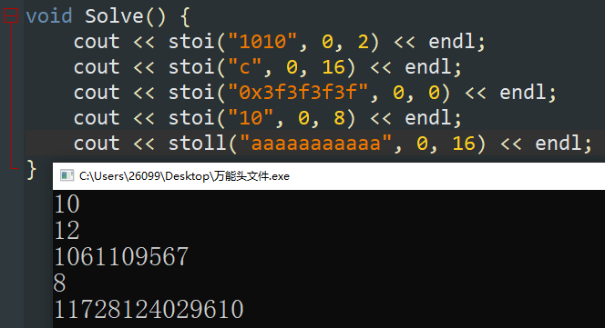

其中 gp_hash_table 使用的最多，其等价于 unordered_map ，内部是无序的。
#include <bits/extc++.h>
#include <ext/pb_ds/assoc_container.hpp>
template<class S, class T> using omap = __gnu_pbds::gp_hash_table<S, T, myhash>;
lower 表示 $\ge$ ，upper 表示 $>$ 。使用前记得先进行排序。
//返回a数组[start,end)区间中第一个>=x的地址【地址！！！】
cout << lower_bound(a + start, a + end, x);
cout << lower_bound(a, a + n, x) - a; //在a数组中查找第一个>=x的元素下标
upper_bound(a, a + n, k) - lower_bound(a, a + n, k) //查找k在a中出现了几次
mt19937 rnd(chrono::steady_clock::now().time_since_epoch().count());
shuffle(ver.begin(), ver.end(), rnd);
用于查找某一元素是否在容器中，相当于 find 函数。在使用前需要先进行排序。
//在a数组[start,end)区间中查找x是否存在，返回bool型
cout << binary_search(a + start, a + end, x);
对容器递增初始化。
//将a数组[start,end)区间复制成“x，x+1，x+2，…”
iota(a + start, a + end, x);
在使用前需要先进行排序。
其作用是，对于区间 [开始位置, 结束位置) ，不停的把后面不重复的元素移到前面来，也可以说是用不重复的元素占领重复元素的位置。并且返回去重后容器中不重复序列的最后一个元素的下一个元素。所以在进行操作后，数组、容器的大小并没有发生改变。
//将a数组[start,end)区间去重，返回迭代器
unique(a + start, a + end);
//与earse函数结合，达到去重+删除的目的
a.erase(unique(ALL(a)), a.end());
__builtin_popcount(x) // 返回x二进制下含1的数量，例如x=15=(1111)时答案为4
__builtin_ffs(x) // 返回x右数第一个1的位置(1-idx)，1(1) 返回 1，8(1000) 返回 4，26(11010) 返回 2
__builtin_ctz(x) // 返回x二进制下后导0的个数，1(1) 返回 0，8(1000) 返回 3
bit_width(x) // 返回x二进制下的位数，9(1001) 返回 4，26(11010) 返回 5
注：以上函数的 $\tt{}long\ long$ 版本只需要在函数后面加上 ll 即可（例如 __builtin_popcountll(x) )， $\tt{}unsigned\ long\ long$ 加上 ull 。
itoa 虽然能将整数转换成任意进制的字符串，但是其不是标准的C函数，且为Windows独有，且不支持 long long ，建议手写。
// to_string函数会直接将你的各种类型的数字转换为字符串。
// string to_string(T val);
double val = 12.12;
cout << to_string(val);
// 【不建议使用】itoa允许你将整数转换成任意进制的字符串，参数为待转换整数、目标字符数组、进制。
// char* itoa(int value, char* string, int radix);
char ans[10] = {};
itoa(12, ans, 2);
cout << ans << endl; /*1100*/
// 长整型函数名ltoa，最高支持到int型上限2^31。ultoa同理。
// stoi直接使用
cout << stoi("12") << endl;
// 【不建议使用】stoi转换进制，参数为待转换字符串、起始位置、进制。
// int stoi(string value, int st, int radix);
cout << stoi("1010", 0, 2) << endl; /*10*/
cout << stoi("c", 0, 16) << endl; /*12*/
cout << stoi("0x3f3f3f3f", 0, 0) << endl; /*1061109567*/
// 长整型函数名stoll，最高支持到long long型上限2^63。stoull、stod、stold同理。
// atoi直接使用，空字符返回0，允许正负符号，数字字符前有其他字符返回0，数字字符前有空白字符自动去除
cout << atoi("12") << endl;
cout << atoi(" 12") << endl; /*12*/
cout << atoi("-12abc") << endl; /*-12*/
cout << atoi("abc12") << endl; /*0*/
// 长整型函数名atoll，最高支持到long long型上限2^63。
在提及这个函数时，我们先需要补充几点字典序相关的知识。
对于三个字符所组成的序列
{a,b,c}，其按照字典序的6种排列分别为：{abc}，{acb}，{bac}，{bca}，{cab}，{cba}其排序原理是：先固定a(序列内最小元素)，再对之后的元素排列。而b<c，所以abc<acb。同理，先固定b(序列内次小元素)，再对之后的元素排列。即可得出以上序列。
$\tt{}next_permutation$ 算法，即是按照字典序顺序输出的全排列；相对应的， $\tt{}prev_permutation$ 则是按照逆字典序顺序输出的全排列。可以是数字，亦可以是其他类型元素。其直接在序列上进行更新，故直接输出序列即可。
int n;
cin >> n;
vector<int> a(n);
// iota(a.begin(), a.end(), 1);
for (auto &it : a) cin >> it;
sort(a.begin(), a.end());
do {
for (auto it : a) cout << it << " ";
cout << endl;
} while (next_permutation(a.begin(), a.end()));
可以快捷的将一串字符串转换为指定进制的数字。
使用方法
stoi(字符串, 0, x进制) ：将一串 $\tt{}x$ 进制的字符串转换为 $\tt{}int$ 型数字。
stoll(字符串, 0, x进制) ：将一串 $\tt{}x$ 进制的字符串转换为 $\tt{}long\ long$ 型数字。允许将各种数值类型转换为字符串类型。
//将数值num转换为字符串s
string s = to_string(num);
//a数组[start,end)区间是否是非递减的，返回bool型
cout << is_sorted(a + start, a + end);
//将a数组[start,end)区间的元素进行累加，并输出累加和+x的值
cout << accumulate(a + start, a + end, x);
//构建一个UUU容器的正向迭代器，名字叫it
UUU::iterator it;
vector<int>::iterator it; //创建一个正向迭代器，++ 操作时指向下一个
vector<int>::reverse_iterator it; //创建一个反向迭代器，++ 操作时指向上一个
exp2(x) ：返回 $2^x$
log2(x) ：返回 $\log_2(x)$
gcd(x, y) / lcm(x, y) ：以 $\log$ 的复杂度返回 $\gcd(|x|, |y|)$ 与 ${\tt lcm}(|x|, |y|)$ ，且返回值符号也为正数。
//获取obj对象中的第index个元素——get<index>(obj)
//需要注意的是这里的index只能手动输入，使用for循环这样的自动输入是不可以的
tuple<string, int, int> Student = {"Wida", 23, 45000);
cout << get<0>(Student) << endl; //获取Student对象中的第一个元素，这里的输出结果应为“Wida”
array<int, 3> x; // 建立一个包含三个元素的数组x
[] // 跟正常数组一样，可以使用随机访问
cout << x[0]; // 获取数组重的第一个元素
resize(n) // 重设容器大小，但是不改变已有元素的值
assign(n, 0) // 重设容器大小为n，且替换容器内的内容为0
// 尽量不要使用[]的形式声明多维变长数组，而是使用嵌套的方式替代
vector<int> ver[n + 1]; // 不好的声明方式
vector<vector<int>> ver(n + 1);
// 嵌套时只需要在最后一个注明变量类型
vector dis(n + 1, vector<int>(m + 1));
vector dis(m + 1, vector(n + 1, vector<int>(n + 1)));
栈顶入，栈顶出。先进后出。
//没有clear函数
size() / empty()
push(x) //向栈顶插入x
top() //获取栈顶元素
pop() //弹出栈顶元素
队尾进，队头出。先进先出。
//没有clear函数
size() / empty()
push(x) //向队尾插入x
front() / back() //获取队头、队尾元素
pop() //弹出队头元素
//没有clear函数，但是可以用重新构造替代
queue<int> q;
q = queue<int>();
size() / empty() / clear()
push_front(x) / push_back(x)
pop_front(x) / pop_back(x)
front() / back()
begin() / end()
[]
默认升序（大根堆），自定义排序需要重载 < 。
//没有clear函数
priority_queue<int, vector<int>, greater<int> > p; //重定义为降序（小根堆）
push(x); //向栈顶插入x
top(); //获取栈顶元素
pop(); //弹出栈顶元素
//重载运算符【注意，符号相反！！！】
struct Node {
int x; string s;
friend bool operator < (const Node &a, const Node &b) {
if (a.x != b.x) return a.x > b.x;
return a.s > b.s;
}
};
size() / empty() / clear()
//从字符串S的S[start]开始，取出长度为len的子串——S.substr(start, len)
//len省略时默认取到结尾，超过字符串长度时也默认取到结尾
cout << S.substr(1, 12);
find(x) / rfind(x); //顺序、逆序查找x，返回下标，没找到时返回一个极大值【！建议与 size() 比较，而不要和 -1 比较，后者可能出错】
//注意，没有count函数
默认升序（大根堆），$\tt set$ 去重，$\tt multiset$ 不去重，$\mathcal O(\log N)$ 。
set<int, greater<> > s; //重定义为降序（小根堆）
size() / empty() / clear()
begin() / end()
++ / -- //返回前驱、后继
insert(x); //插入x
find(x) / rfind(x); //顺序、逆序查找x，返回迭代器【迭代器！！！】，没找到时返回end()
count(x); //返回x的个数
lower_cound(x); //返回第一个>=x的迭代器【迭代器！！！】
upper_cound(x); //返回第一个>x的迭代器【迭代器！！！】
特殊函数 next 和 prev 详解：
auto it = s.find(x); // 建立一个迭代器
prev(it) / next(it); // 默认返回迭代器it的前/后一个迭代器
prev(it, 2) / next(it, 2); // 可选参数可以控制返回前/后任意个迭代器
/* 以下是一些应用 */
auto pre = prev(s.lower_bound(x)); // 返回第一个<x的迭代器
int ed = *prev(S.end(), 1); // 返回最后一个元素
erase(x); 有两种删除方式：
//连续头部删除
set<int> S = {0, 9, 98, 1087, 894, 34, 756};
auto it = S.begin();
int len = S.size();
for (int i = 0; i < len; ++ i) {
if (*it >= 500) continue;
it = S.erase(it); //删除所有小于500的元素
}
//错误用法如下【千万不能这样用！！！】
//for (auto it : S) {
// if (it >= 500) continue;
// S.erase(it); //删除所有小于500的元素
//}
默认升序（大根堆），$\tt map$ 去重，$\tt mulitmap$ 不去重，$\mathcal O(logS)$ ，其中 $S$ 为元素数量。
map<int, int, greater<> > mp; //重定义为降序（小根堆）
size() / empty() / clear()
begin() / end()
++ / -- //返回前驱、后继
insert({x, y}); //插入二元组
[] //随机访问，multimap不支持
count(x); //返回x为下标的个数
lower_cound(x); //返回第一个下标>=x的迭代器
upper_cound(x); //返回第一个下标>x的迭代器
erase(x); 有两种删除方式：
慎用随机访问！——当不确定某次查询是否存在于容器中时，不要直接使用下标查询，而是先使用 count() 或者 find() 方法检查key值，防止不必要的零值二元组被构造。
int q = 0;
if (mp.count(i)) q = mp[i];
慎用自带的 pair、tuple 作为key值类型！使用自定义结构体！
struct fff {
LL x, y;
friend bool operator < (const fff &a, const fff &b) {
if (a.x != b.x) return a.x < b.x;
return a.y < b.y;
}
};
map<fff, int> mp;
将数据转换为二进制，从高位到低位排序，以 $0$ 为最低位。当位数相同时支持全部的位运算。
// 如果输入的是01字符串，可以直接使用">>"读入
bitset<10> s;
cin >> s;
//使用只含01的字符串构造——bitset<容器长度>B (字符串)
string S; cin >> S;
bitset<32> B (S);
//使用整数构造（两种方式）
int x; cin >> x;
bitset<32> B1 (x);
bitset<32> B2 = x;
// 构造时，尖括号里的数字不能是变量
int x; cin >> x;
bitset<x> ans; // 错误构造
[] //随机访问
set(x) //将第x位置1，x省略时默认全部位置1
reset(x) //将第x位置0，x省略时默认全部位置0
flip(x) //将第x位取反，x省略时默认全部位取反
to_ullong() //重转换为ULL类型
to_string() //重转换为ULL类型
count() //返回1的个数
any() //判断是否至少有一个1
none() //判断是否全为0
_Find_fisrt() // 找到从低位到高位第一个1的位置
_Find_next(x) // 找到当前位置x的下一个1的位置，复杂度 O(n/w + count)
bitset<23> B1("11101001"), B2("11101000");
cout << (B1 ^ B2) << "\n"; //按位异或
cout << (B1 | B2) << "\n"; //按位或
cout << (B1 & B2) << "\n"; //按位与
cout << (B1 == B2) << "\n"; //比较是否相等
cout << B1 << " " << B2 << "\n"; //你可以直接使用cout输出
通常指代 unordered_map、unordered_set、unordered_multimap、unordered_multiset，与原版相比不进行排序。
如果将不支持哈希的类型作为 key 值代入，编译器就无法正常运行，这时需要我们为其手写哈希函数。而我们写的这个哈希函数的正确性其实并不是特别重要（但是不可以没有），当发生冲突时编译器会调用 key 的 operator == 函数进行进一步判断。参考
struct hash_pair {
template <class T1, class T2>
size_t operator()(const pair<T1, T2> &p) const {
return hash<T1>()(p.fi) ^ hash<T2>()(p.se);
}
};
unordered_set<pair<int, int>, int, hash_pair> S;
unordered_map<tuple<int, int, int>, int, hash_pair> M;
需要两个条件，一个是在结构体中重载等于号（区别于非哈希容器需要重载小于号，如上所述，当冲突时编译器需要根据重载的等于号判断），第二是写一个哈希函数。注意 hash<>() 的尖括号中的类型匹配。
struct fff {
string x, y;
int z;
friend bool operator == (const fff &a, const fff &b) {
return a.x == b.x || a.y == b.y || a.z == b.z;
}
};
struct hash_fff {
size_t operator()(const fff &p) const {
return hash<string>()(p.x) ^ hash<string>()(p.y) ^ hash<int>()(p.z);
}
};
unordered_map<fff, int, hash_fff> mp;
以下两个方法均可。注意 hash<>() 的尖括号中的类型匹配。
struct hash_vector {
size_t operator()(const vector<int> &p) const {
size_t seed = 0;
for (auto it : p) {
seed ^= hash<int>()(it);
}
return seed;
}
};
unordered_map<vector<int>, int, hash_vector> mp;
namespace std {
template<> struct hash<vector<int>> {
size_t operator()(const vector<int> &p) const {
size_t seed = 0;
for (int i : p) {
seed ^= hash<int>()(i) + 0x9e3779b9 + (seed << 6) + (seed >> 2);
}
return seed;
}
};
}
unordered_set<vector<int> > S;
function 统一写法需要注意的是，虽然 function 定义时已经声明了返回值类型了，但是有的时候会出错（例如，声明返回 long long 但是返回 int ，原因没去了解），所以推荐在后面使用 -> 再行声明一遍。
function<void(int, int)> clac = [&](int x, int y) -> void {
};
clac(1, 2);
function<bool(int)> dfs = [&](int x) -> bool {
return dfs(x + 1);
};
dfs(1);
auto 非递归写法不需要使用递归函数时，直接用 auto 替换 function 即可。
auto clac = [&](int x, int y) -> void {
};
auto 递归写法相较于 function 写法，需要额外引用一遍自身。
auto dfs = [&](auto self, int x) -> bool {
return self(self, x + 1);
};
dfs(dfs, 1);
可以将一些必要的声明和预处理放在构造函数，在编译时，无论放置在程序的哪个位置，都会先于主函数进行。下方是我将输入流控制声明的过程。
int __FAST_IO__ = []() { // 函数名称可以随意修改
ios::sync_with_stdio(0), cin.tie(0);
cout.tie(0);
cout << fixed << setprecision(12);
freopen("out.txt", "r", stdin);
freopen("in.txt", "w", stdout);
return 0;
}();